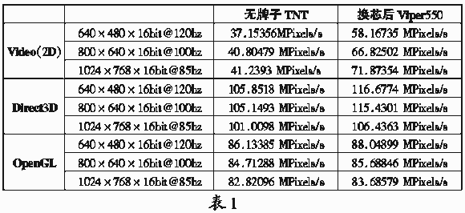

很早就听说一些TNT显卡能用Diamond的驱动程序，使性能大幅提高。我买了一块杂牌的显示卡，能否用帝盟的驱动程序呢？能，但首先要为它换“芯”。
我首先下载了Diamond的BIOS文件，在电脑城一问说要五十大元才给我一块BIOS芯片,太贵了吧，买回去我的显示卡能否用上还是个问题。后来我就决定去“垃圾”店买一块1M的主板用的BIOS芯片回家(是Winbond的)。网上找了几个主板通用的擦写程序，就试着用最危险的方法——热插拔的方法去写Flash ROM。首先启动机器，小心地拔出主板上的Flash ROM芯片，换上新买的Winbond芯片，然后我就试着把帝盟的195c0500.rom文件写入，但出现了文件大小与芯片的容量不同的提示，但我还是试着把文件写入，却发现写了很长时间都没有什么反应（没有死机)，胡乱动了几下键盘又回到了DOS状态，拔出芯片插回显示卡上，开机“一片乌黑”——失败了。
后来又想出了一个新办法：把原来TNT上的名为MX29f001TPC的Flash ROM（256k）放进主板，用Uniflash读出，并且生成一个文件存入磁盘，结果是Uniflash把256k的ROM识别为1Mbit的ROM，生成128k大小的文件。再用UltraEdit一看,成功的念头在我的脑海浮现了，因为我发现位于3F00H之后的字节内容全为空（00），只要把Diamond
BIOS文件195c0500.rom的内容覆盖掉刚刚生成的文件的前半部分，其余部分保持为空值(00)。用UltraEdit5.0的时候，分别两次拷贝前后两个部分。这样把文件存盘后再检查文件大小是不是128k，用Uniflash写回1M
bit的Flash ROM后（当然用热插拔法啦）,再把Flash ROM放回显示卡。一开机，Diamond的字样出现了。就是这么简单!!
接下来下载Diamond Viper550（采用TNT芯片）的驱动程序，安装过程很顺利，还增加了一些特别的软件如InControl Tools。然后我做了各项性能测试，总体上有了大的提升(用WinTune测试)，特别是2D性能提高了差不多40％（正常的文字处理正需要这个），D3D和OpenGL性能都有一定的提高。
我的机器是赛扬366超频到550MHz、LGS64M内存、杂牌主板（采用VIA 693芯片组）。
除了有些危险外，我发现一些较新的主板比一般的编程器功能更强。各种Flash ROM放下去用Awdflash.exe（Award主板的写BIOS程序）都能读出它的牌子、型号，连编程器都不一定有这个功能。但有个缺点：Awdflash.exe只能写进Award的BIOS文件，所采用AMI BIOS的朋友只好用Uniflsah.exe (可以到http://topage.126.com找Uniflash)。最后补上一句，各位DIYer小心你的每一步操作！
（广东 陈健锋） |